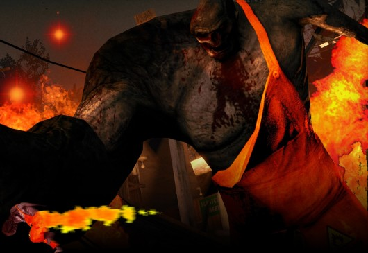
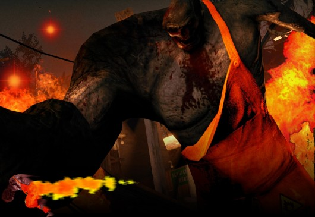

Descarga mods de infectados para left 4 dead 2

 

SMOKER
Decidió llamarlo Nova Gas Smoker, gratitud a MentleGen por el nombre.
¡VPK versión disponible ahora, poner VPK en la carpeta left4dead2/addons y listo! He tenido problemas en el pasado con partículas y VPK, por lo que puede o no funcionar para todos ustedes, pero el método manual de edición del archivo PAK definitivamente funcionará.
Coloque el archivo smokerxx.pcf en su carpeta left4dead2/left4dead2/particles.
Luego vaya a su carpeta left4dead2/left4dead2dlc3 y abra pak01006 con Notepad++, encuentre la línea
"archivo" "partículas/smokerfx.pcf" y cámbialo a
¡"archivo", "partículas/smoker_xx.pcf" guardar el archivo, y salir, entonces usted ha terminado!
Ahora también tiene un ligero brillo en sus partículas, como se muestra en las capturas de pantalla, por lo que disparar este bugger en la oscuridad es mucho más interesante ahora.
Funciona con cualquier piel.
CHARGER
Una piel que hice hace unos meses pero que aún no publiqué aquí.La textura es bastante simple recolor, + efecto de partícula editado.Ahora, el cargador tiene un efecto de rastro llameante (naranja oscuro, para no confundir con el fuego real); y hace estallar bengalas naranjas cuando se rompe contra un obstáculo.
SPITTER
Mi primera piel. Creado en Photoshop CS5. Esta piel es mi interpretación sobre lo que sucedería si el Spitter continuara mutando y acumulando ácido. Noté que tenía llagas en su cuerpo, lo que significaba que no era complaciente inmune a su ácido. Así que pensé que eventualmente quemaría su piel y entraría en su sangre, desfigurándola aún más y volviéndola verde y muy viscosa, el ácido también haría que su cuerpo brillara. Incluye mapas personalizados normales y especulares. El mapa normal desaparece al morir por alguna razón. Creadores de Valve-Original del Spitter Me-Reskinning ella. Inspiración de Muffin Oscuro
TANKGuapo Dan's Shredded Tank L4D2 Update ***12/30/09 Editar*** Se agregó VPK Installer NOTAS DE LA VERSIÓN Esto es puramente un reskin rápido de mi tanque Triturado original. Agrega un poco más de color debido a que el tanque se ve un poco suave en los nuevos entornos de luz diurna. INSTALAR Coloque el VPK en su Carpeta de Complementos "C:\Archivos de Programa (x86)\Steam\steamapps\common\left 4 dead 2\left4dead2\addons" A partir del 12/30/09 el método VPK está deshabilitado en el Modo Realismo... No estoy seguro de por qué Valve hizo esto, así que si quieres jugar al realismo con esta piel, sigue las instrucciones a continuación. 1.Navegue a "C:\Archivos de programa (x86)\Steam\steamapps\common\left 4 dead 2\left4dead2" 2.Sobrescribe la carpeta "materiales" en tu carpeta "left4dead2". 3.Sobrescribe tu "Whitelist.cfg" con el suministrado. 4.Abrir pak01_dir.vpk con notepad++ y cambia las líneas $baseTextura "modelos\infected\hulk\tank_color" $bumpmap "models\infected\hulk\tank_Normal" También $baseTextura "models\infected\hulk\hank_color" $bumpmap "modelos\infected\hulk\hank_Normal"
Hacer click debajo:
portafolio personal